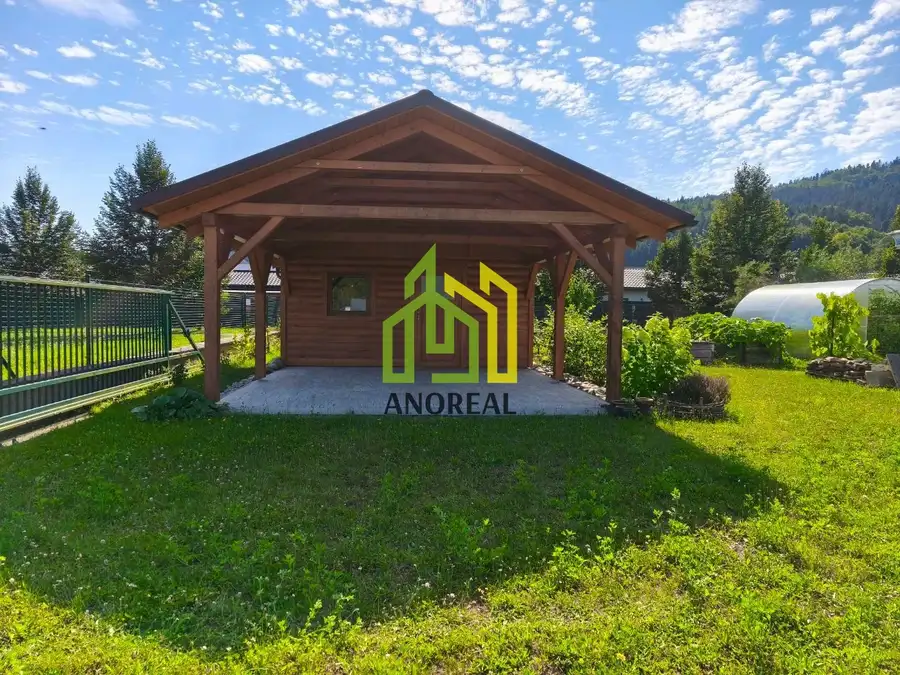
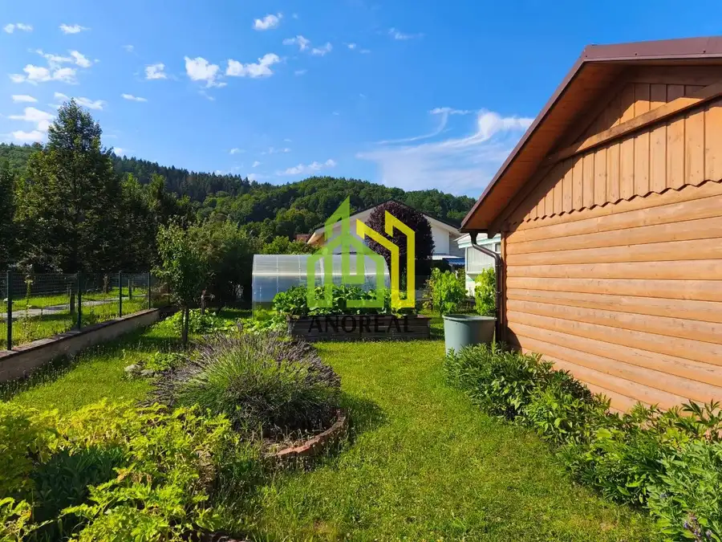
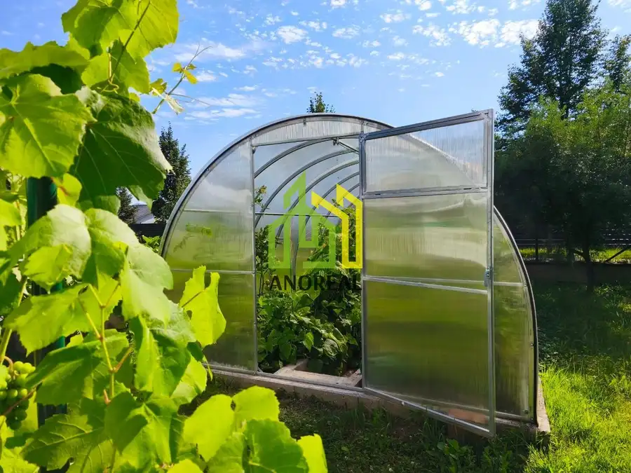
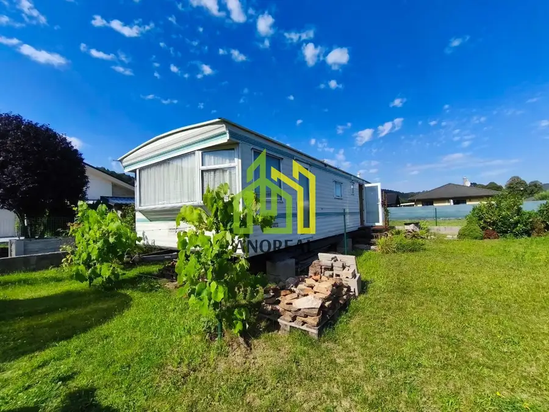
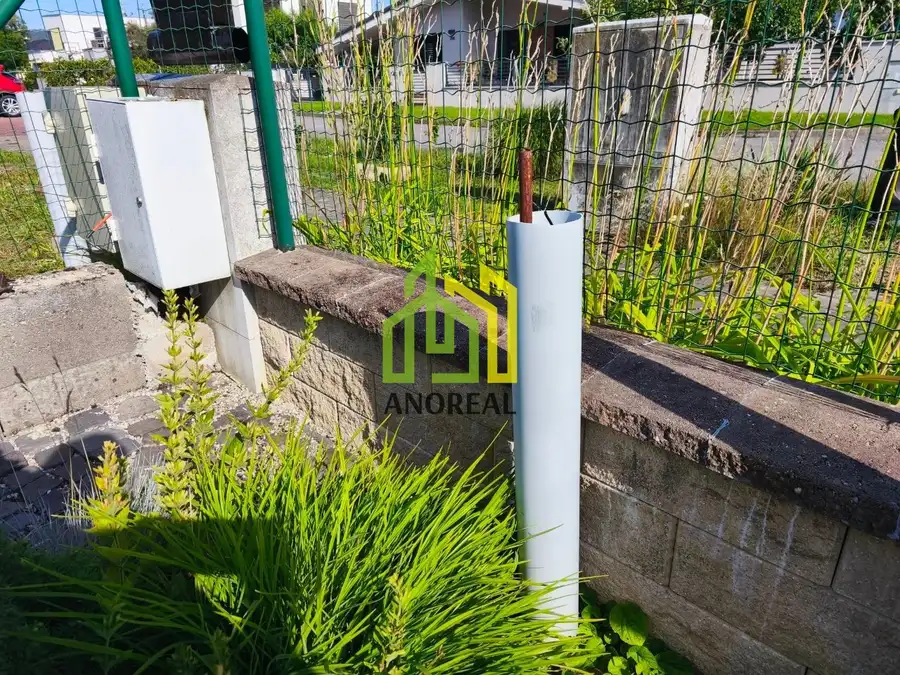
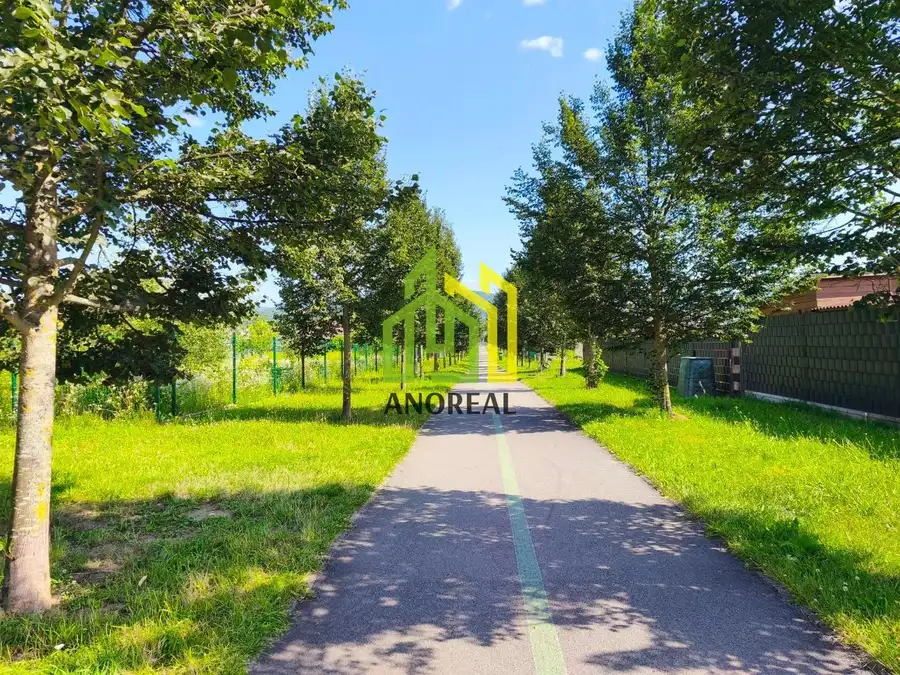

Na predaj stavebný pozemok s prístreškom a skleníkom, Svederník -Lipová alej, 475 m2
Svederník







- Plocha475 m²
O nehnuteľnosti
Ponúkame na predaj slnečný a rovinatý stavebný pozemok vo vyhľadávanej lokalite Svederník – časť Lipová alej s celkovou výmerou 475 m²/ 20 m x cca 24 m /, blízko pri Žiline. Veľkou výhodou je kompletná dostupnosť inžinierskych sietí – na pozemku sa nachádza vodovod, vlastná studňa, elektrická prípojka 220/400 V, plynová prípojka a kanalizácia, optika.Súčasťou pozemku je osadený a plne funkčný mobilný dom, ktorý je v cene. Nachádza sa tu tiež novovybudovaný prístrešok pre autá so skladovým priestorom na náradie a skleník. Vybudovaná záhrada je pravidelne udržiavaná, vytvára príjemné prostredie na oddych a trávenie voľného času.Pozemok je kompletne oplotený s automatickou vstupnou bránou. Bezproblémový prístup k nehnuteľnosti zabezpečuje obecná asfaltová cesta.Nehnuteľnosť je vhodná na výstavbu rodinného domu, rekreačné využitie alebo ako investícia. Výhodou je, že už dnes ponúka praktické zázemie a upravený priestor bez potreby ďalších počiatočných investícií. Viac info v RK! Kontakt: 0905 147 011, ivana.prazenicova@anoreal.sk
Parametre
- Druh
- Pozemok pre rodinné domy
- Dátum zverejnenia
- 12. 08. 2026
- Dĺžka pozemku
- 20
- Elektrina
- Na pozemku - 230 V, Na pozemku - 400 V
- Funkčné využitie
- Výstavba rodinného domu
- Odpadové vody
- Na pozemku - Kanalizácia
- Plocha pozemku
- 475 m²
- Plyn
- Na pozemku
- Pripravenosť k výstavbe
- Schválené v územnom pláne
- Terén pozemku
- Rovinatý
- Typ
- Predaj
- Voda
- Na pozemku - Diaľkový vodovod
- Územie
- Intravilán
- Šírka pozemku
- 24